Party Dungeons는 초반 게임 시스템으로, 플레이어들이 함께 MMO 스타일 도전을 완료해 계정 부스트를 획득하는 콘텐츠입니다. 이 가이드는 던전(W1·W2·W3) 팁, 최고의 크레딧 상점 구매 목록, 그리고 승리 확률을 극대화하고 결국 솔로로도 도전을 클리어할 수 있는 이상적인 특성 세팅을 다룹니다. 핵심 게임 스탯·아이템·업적이 파티 던전 시스템과 연결되어 있어 초보자가 놓치기 쉬운 중요한 시스템입니다.
던전 팁
- 최고의 클래스: Warrior는 단순한 광역 공격과 낮은 마나 비용으로 최고의 클래스입니다. 더 강력하고 안정적인 공격을 추가해주는 Squire 직업으로 전직하세요.
- Happy Hour: 여러 번의 부스티드 티켓 실행을 한 번에 소모해 보상을 크게 높이는 해피 아워(Happy Hour) 중에 반드시 플레이하세요. World 1 던전이 가장 인기 있으며, World 2와 World 3는 보통 솔로로 진행합니다.
- 카드: 던전 전용 카드와 관련 카드 세트로 교체하는 것을 잊지 마세요. 드롭률 및 화폐 획득을 포함해 다양하지만 중요한 소소한 보너스들이 있습니다.
- 기도(Prayers): Frosty Firefight 51웨이브에서 해금되는 Vacuous Tissue 기도는 획득하는 Dungeon Credits와 Flurbos를 두 배로, 하지만 던전 패스도 두 배로 만듭니다. 해피 아워와 마찬가지로 소요 시간 대비 효율을 높입니다. 해피 아워와 함께 사용할 경우 부스티드 실행이 최소 40회(기본 해피 아워 비용 20회 x 2) 이상 있는지 확인하세요. 그렇지 않으면 버그로 인해 보상이 증가하지 않습니다.
- 해금을 위한 도전 과제: 이 가이드에서 권장하는 Dungeon Credits Shop 구매를 활용하세요. 던전 외 콘텐츠 도전 과제 달성이 필요하지만 던전 전투력에 큰 영향을 줍니다.
- 파티 던전 그라인드: 파티 던전은 크레딧으로 아이템을 구매하고 레벨에서 유용한 특성을 해금하기 전까지 초반에 어렵습니다. 해피 아워를 활용해 강한 플레이어들로부터 World 1 던전에서 캐리를 받아 필요한 그라인드를 줄이세요.
- W1 던전: World 1 던전은 주로 드롭 확률 도전입니다. 개구리 보스를 소환하는 데 필요한 몬스터 드롭을 충분히 얻는 동시에 필요한 데미지량을 구축해야 합니다. 추가 플레이어가 몬스터 드롭 획득을 돕거나 모서리의 나무를 찍어 추가 몬스터를 스폰할 수 있습니다.
- W2 던전: W2는 다양한 스킬 기반 도전이 있으며, 가능한 RNG 아이템이 줄어들어 패시브 스탯의 기반이 필요합니다. 따라서 어느 정도 던전 랭크를 쌓은 후 도전하세요. 각 도전의 목표를 위키에서 확인하세요.
- W3 던전: W2와 마찬가지로 일부 던전 랭크가 필요하며, Ice Guards와 보스에게 데미지를 주는 데 필요한 RNG 아이템을 얻기 위해 가능한 한 많은 직업을 파밍하는 도전입니다.
던전 빌드
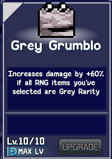
승리 확률을 극대화하는 세 가지 핵심 던전 빌드가 있습니다(Grey Grumblo, RNG Voucher, Horn of the Foal). 선택은 현재 업그레이드 상황과 파티 던전 중 드롭 운에 따라 달라집니다.
Grey Grumblo (회색 아이템)
초보 던전 플레이어를 위한 기본 빌드로, World 1 도전 과제인 Naked and Afraid(장비나 무기 없이 하수도 Poop 처치)로 해금되는 Grey Grumblo RNG 아이템을 활용하는 단순하고 효과적인 방법입니다.
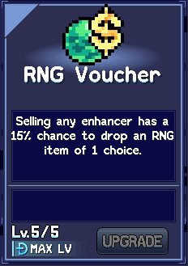
이 아이템과 회색 아이템만 조합하면 풍부하게 드롭되는 회색 아이템 덕분에 데미지량이 빠르게 스케일됩니다. 회색이 아닌 아이템은 절대 취하지 않도록 주의하고, Handy Icepick이나 Sugar Rush 같은 최고의 회색 RNG 아이템을 해금하세요.
RNG Voucher (대량 RNG 아이템)
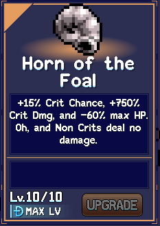
World 3의 Souped Up Salts 도전 과제(정제소 빨간 등급 10 달성)로 해금됩니다. 파티 던전 중 이것을 쌓으면 상점에서 향상제를 저렴하게 구매하고 팔아 RNG 아이템의 임계 질량에 도달할 수 있습니다.
Horn of the Foal (대규모 치명타 데미지)
World 1 도전 과제 House Flipper(Baba Yaga를 25초 이내 처치)로 해금되는 궁극의 RNG 아이템입니다. 이 아이템이 드롭되면 회색 RNG 아이템 Sharp Eye로 치명타 확률을 높이는 데 집중하세요. 크리가 아닌 공격은 데미지가 0이기 때문입니다. 또한 Sneaky Cap(초록), Sucker Punch(초록), Dead Book(파랑) 등 다른 치명타 아이템도 추가하세요.
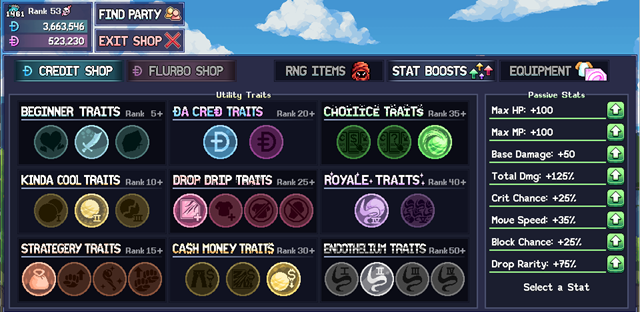
이 아이템을 찾을 확률은 보라색 RNG 아이템 Coin Flip과, 약 50% 확률로 Horn of the Foal을 시작 아이템으로 주는 Royale Traits 레벨 40 특성으로 크게 높아집니다.
Dungeon Credits Shop 최고의 구매 목록
아래는 각 RNG 유형별로 전투력을 높이기 위해 우선적으로 해금하고 업그레이드할 항목입니다. 목록에 없는 회색 아이템들도 결국에는 업그레이드할 가치가 있습니다. 모든 항목을 해금하는 데 필요한 도전 과제는 Idleon Party Dungeons 위키 페이지에서 확인하세요.
패시브 파티 던전 스탯은 다음과 같이 레벨을 올리세요.
- 모든 패시브 스탯을 레벨 50까지 올리세요. 모든 스탯의 기반은 던전 진행에 중요하며, 구매할수록 비용이 늘어납니다.
- 레벨 50 이후에는 현재 계정 필요에 집중하세요(생존력에는 HP/블록 확률, 데미지에는 기본/총 데미지량/치명타 확률, 전반적인 RNG 아이템 드롭률 향상에는 드롭 희귀도).
| RNG 아이템 (유형) | 설명 | 해금 조건 | 비고 |
|---|---|---|---|
| Sharp Eye (회색) | 치명타 확률 +3%. 치명타는 대박! (레벨당 +0.5%) | 기본 해금 | 특히 Horn of the Foal과 함께 더 높은 데미지량에 중요합니다. |
| Sugar Rush (회색) | 일반 공격 속도 +15%. 펑펑펑! (레벨당 +1%) | 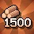 World 1 도전 과제 – 1.5 Ki'log'grams |
공격 속도는 눈에 띄는 데미지량 증가입니다. |
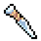 Handy Icepick (회색) |
일반 공격이 추가 데미지 라인에 명중할 +25% 확률 (레벨당 +2%) | World 1 도전 과제 – Copper Quipment | 더 많은 데미지 라인은 간단한 데미지량 배수입니다. |
| Stardew Drop (회색) | MP가 가득 찼을 때 데미지량 +50%. 가득 채워야 합니다! (레벨당 +2%) | World 2 도전 과제 – Rat-a-tat-tat | 스킬 사용을 포기하는 대신 Grey Grumblo 빌드의 대안입니다. |
| Grey Grumblo (회색) | 선택한 RNG 아이템이 모두 회색 희귀도일 때 데미지량 +40% (레벨당 +2%) | 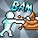 World 1 도전 과제 – Naked and Unafraid |
핵심 파티 던전 빌드로, 추가 레벨업으로 전투력이 소폭 향상됩니다. |
| Sucker Punch (초록) | 치명타 데미지량 +30% (레벨당 +3%) | 기본 해금 | 특히 Horn of the Foal과 함께 더 높은 데미지량에 중요합니다. |
| Ninja Smoke (초록) | 피격 시마다 무적 시간 +2초 (레벨당 +0.1초) | World 2 도전 과제 – Hammer Bub | 패시브 파티 던전 스탯이 충분해지기 전 초반 생존력에 좋습니다. |
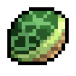 Tortoise Shell (초록) |
피격 시마다 블록 확률 +0.3% 누적, 최대 +6% (레벨당 최대치 +0.2%) | 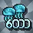 World 2 도전 과제 – Jellyfish Jelly |
위와 동일합니다. |
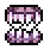 Vampire Fangs (초록) |
몬스터 처치 시 50% 확률로 HP +1 회복 (레벨당 +2.5% 확률) | World 1 도전 과제 – Right to Bear Iron | 위와 동일합니다. |
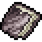 Dead Book (파랑) |
처치한 몬스터 유형당 데미지량 및 치명타 확률 +0.6% (레벨당 +0.05%) | 기본 해금 | 특히 Horn of the Foal과 함께 더 높은 데미지량에 중요합니다. |
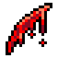 Single Cut (파랑) |
데미지 10 받고 데미지량 +6% 획득. 또한 90% 확률로 이 아이템이 다시 바닥에 드롭됩니다 (레벨당 +0.2%) | World 2 도전 과제 – Vial Noob | 파티 던전 드롭 희귀도가 높아지면 음식이 넘쳐나므로, 이 아이템을 반복 사용해 높은 기본 데미지량 증가를 쌓을 수 있습니다. |
| RNG Voucher (파랑) | 향상제 판매 시 10% 확률로 선택 가능한 RNG 아이템 1개 드롭 (레벨당 +1%) | World 3 도전 과제 – Souped Up Salts | RNG Voucher 빌드에 필수이며, 레벨업할수록 효과도 좋아집니다. |
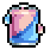 Super Soda (파랑) |
일반 공격 피격 시 마나 5% 재생. Sugar Rush 1개도 포함! (레벨당 +0.2%) | World 4 도전 과제 – Milky Wayfarer | 공격을 더 자주 사용할 수 있는 간단한 마나 소스이며, Sugar Rush RNG 아이템도 추가합니다. |
| Coin Flip (보라) | 앞면이 나오면 보유한 주황 RNG 아이템이 없을 때 1개 획득, 뒷면이 나오면 회색 RNG 아이템 4개 획득. | World 4 도전 과제 – Mutant Massacrer | 레벨 40 특성 사용 시 Horn of the Foal에 더 자주 접근하는 데 핵심입니다. |
| Horn of the Foal (주황) | 치명타 확률 +15%, 치명타 데미지량 +600%, 최대 HP -60%. 그리고 크리가 아닌 공격은 데미지 없음 (레벨당 치명타 데미지량 +15%) | 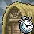 World 1 도전 과제 – House Flipper |
Horn of the Foal 빌드용입니다. |
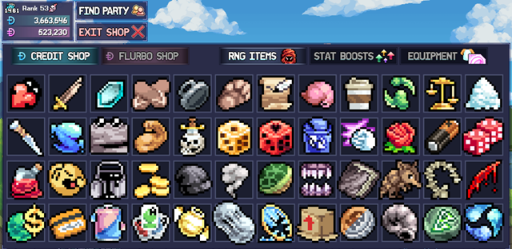
최고의 던전 특성
던전 특성은 5레벨마다 해금되며 던전 도전 완료에 도움이 되는 패시브 버프의 또 다른 소스입니다. 각 레벨별 최고의 특성은 다음과 같습니다.
| 특성 레벨 | 최고의 효과 | 비고 |
|---|---|---|
| 5 | 기본 데미지량 3 증가 | 초반 전투 데미지량 향상에 도움이 됩니다. |
| 10 | 각 던전 실행 시작 시 회색 RNG 아이템 2개와 함께 시작 | 항상 Grey Grumblo 빌드를 옵션으로 갖출 수 있어 최고의 선택입니다. 다른 빌드를 위한 RNG 아이템 운이 없을 때도 대비됩니다. |
| 15 | 각 회색 RNG 아이템이 드롭률 +1% 추가 제공 | 회색 아이템의 풍부함과 드롭률의 유용함(파티 던전 몬스터 드롭이나 더 많은 아이템 수집)의 조합이 강력합니다. |
| 20 | 몬스터와 보스에서 Dungeon Credits 30% 더 자주 드롭 OR 몬스터와 보스에서 Dungeon Flurbos(분홍색) 30% 더 자주 드롭 | 현재 필요에 따라 교체하세요. 처음에는 파티 던전 전투력을 높이는 데 사용할 수 있는 Dungeon Credits부터 시작하면 Dungeon Flurbo 파밍도 쉬워집니다. |
| 25 | 향상제가 장비 대신 몹에서 25% 더 자주 드롭 | 향상제가 많아지면 강력한 부스트로 장비를 항상 업그레이드할 수 있고, RNG Voucher 빌드의 잠재력도 높아집니다. 필요한 장비는 파티 던전 내 상점에서 구매할 수 있습니다. |
| 30 | RNG 아이템의 상점 가격이 15% 더 느리게 상승 | RNG 아이템은 강력한 상점 구매로 많은 전투력 업그레이드를 제공해 가장 일관성 있는 선택입니다. 향상제 옵션은 RNG Voucher 빌드 실행 시 유용하지만, 해당 실행에서 RNG Voucher를 얻지 못하면 가치가 줄어듭니다. |
| 35 | 상점 외 경로로 얻는 RNG 아이템이 +1 선택지를 갖는 경우가 생김 | 몬스터 드롭 RNG 아이템에 더 많은 선택지를 줘 일관성을 높입니다. RNG Voucher 빌드와도 호환되며, 초반 RNG 아이템 대부분이 상점 밖에서 나오므로 선호됩니다. |
| 40 | 각 던전 시작 시 4개 선택지 중 보라색 RNG 아이템 1개와 함께 100% 확률로 시작 | Coin Flip RNG 아이템을 획득해 첫 번째 아이템으로 Horn of the Foal을 얻을 50% 확률로 활용할 수 있습니다. |
| 50 | 상점에서 RNG 아이템 구매 시 40% 확률로 1개 대신 2개 획득 | 전체 RNG 아이템 수를 눈에 띄게 늘려 전투력을 스케일합니다. 대안으로 최대 MP가 1인 옵션을 사용하면 Coin Flip RNG 확률이 높아집니다. |
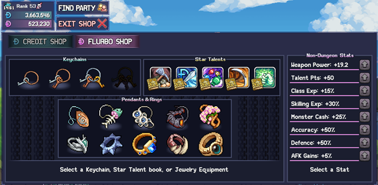
Flurbo Shop 최고의 구매 목록
Flurbo 상점은 분홍색 던전 화폐를 사용해 파티 던전 진행을 다른 게임 보너스로 전환합니다. 강력한 패시브 스탯, 키체인, 스타 탤런트, 액세서리 등이 있습니다. 다음을 우선순위로 권장합니다.
- 비던전 스탯 – Accuracy(명중률), weapon power(무기 파워), AFK(방치) 획득량, 탤런트 포인트는 진행에 강력한 초반 보너스입니다.
- 스타 탤런트 – Supersource는 강력한 초반 특수 탤런트로 일찍 구매하세요. Action Frenzy와 Mega Crit도 강력하지만, 캐릭터에게 필요한 펜던트나 반지를 구매한 후로 미루세요.
- 펜던트 – Flurbos 절약을 위해 각 펜던트를 하나씩 구매해 다음을 해금하세요. Persephones Bouquet이 가장 강한 옵션이므로 계정에 최소 하나는 확보하세요.
- 반지 – 펜던트와 마찬가지로 해금을 위해 하나씩 구매하되, 캐릭터들에 Rex Rings와 Emperor's Opal을 집중 배치하세요.
- 키체인 – 몹 리스폰, 스탯, AFK 획득량 3티어 옵션 구매는 후반 활동입니다. 원하는 다른 Flurbo 아이템을 모두 구매하기 전에는 키체인을 구매하지 마세요. 좋은 키체인을 찾는 데 비용이 많이 들지만, 일반 파티 던전 플레이를 통해서도 얻을 수 있습니다.